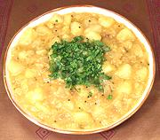

|
Potato & Onion CurryIndia - Tari Aloo | ||||
| Serves: Effort: Sched: DoAhead: |
2 main ** 50 min Yes |
A simple light main or side and a popular brunch dish through much of India. Chunks of potato float in an aromatic onion sauce with just a touch of chili. This dish reheats well. | |||
|
1 10 1 3/4 ----- 1/2 1/2 1/4 ----- 3 1/2 1 2 2/3 1/2 ---- ar |
# oz in --- T t t --- T t t c t T --- |
Potatoes (1) Onion Chili Serrano Ginger root -- Spices Coriander seeds Turmeric Chili powder (2) --------- Oil (3) Mustard Seed (4) Chana Dal (5) Water Salt Lemon Juice -- Garnish Cilantro |
PREP - (20 min)
|
imv_potatoonion1 040724 r 090404 r 211017 cic260 -
www.clovegarden.com
©Andrew Grygus - agryg@aaxnet.com - Linking to and
non-commercial use of this page is permitted.